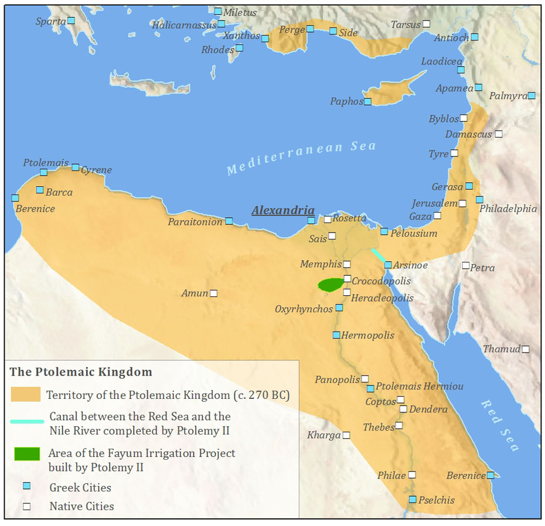

A New Dawn for an Old Land
For centuries, Egypt had been one of the premier powers in the world. Her Pharohs had gathered great armies, built massive monuments, and conducted huge amounts of trade. But, in recent times the great river kingdom had fallen on hard times. Persia had driven out the last native rulers of the region, and controlled the land as a satrapy. As Alexander's second stop, he swept through the region, stopped just long enough to be declared the son of the sun god Ammun, found the city of Alexandria-by-Egypt and head off for more conquests.
After his death though, the region was taken over by one of his generals, Ptolemy. Now the sole power base of another great man, the land of the Nile river went through its last Golden age as a great power for centuries. Alexandria became the center of learning for the whole Eastern Medditeranian, and the heirs of Ptolemy navigated the land through the wars the followed as Alexander's Successors fought among themselves. Eventually the kingdoms strength was used up in multiple vicious wars with the Mesopotamian lands of Seleucus. This weakness allowed Romans to sieze the land, and upon that day the kingdom of the Nile was relegated to being the Roman's breadbasket.
